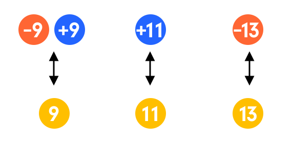

到目前为止，我们已经系统学习了引申音的概念与标记法以及避用音（Avoid Note）。从本讲开始，我们将探索在实战中究竟该如何抉择引申音。
 1. 跨越“可用”的门槛
1. 跨越“可用”的门槛
免于被贴上避用音烙印的音符固然都拥有成为引申音的候选资格，但这绝不意味着你可以随心所欲、不加节制地肆意滥叠。排除掉避用音后沉淀下来的，充其量只是“可用（Available）”的引申音而已。 要从中真正挑选出该使用的音符，我们还需要在脑海中经历一层更深维度的审美思考。切不可因为属七和弦理论上能叠置大量引申音，就盲信“叠得越多音乐就越高级”——事实往往恰恰相反。
IV V IIIm VIm ♭VII V7(-9,+9,+11,-13)
这是在流行曲风中笃信“属七和弦的避用音只有11th”而毫无节制疯狂堆砌引申音的反面教材。一听便知，无法服务于歌曲意境的虚浮技巧毫无价值。如果不与乐曲的真实情感内核深度对话，反倒是返璞归真的纯粹和弦听起来更加帅气利落。
IV V IIIm VIm ♭VII V
这样听起来舒服自然得多。因此，从这里开始我们将更立足于实战创作，深入剖析引申音的精妙抉择。
2. 非自然音阶引申音（Non-diatonic Tension）
鉴于本讲深入实操，我们必须直面上一讲特意留白的盲区——那就是调外（非自然音阶）引申音。例如在大调体系中，所有人遵循大调自然音阶是绝对的基石，音阶以外的音作为“调外音”在第一轮筛选中就被毫不留情地剔除了。

由于调用带有临时升降记号的音符本质上往往意味着转调或音阶的更迭，乐手在即兴合奏中绝不能擅自妄为。但换个角度看，如果是全员商定一致共同更换音阶，抑或是个人享有绝对主权的自由独立作曲，将调外音融入和声便成了极富魅力的可选方案。在这种语境下，依然遵循“上方犯忌，但属七和弦享有赦免”的法度来区分可用与避用。
IVΔ9 IIm9 VIm9 IΔ9 IIIm9
例如若想将IIIm7拓展为九和弦，就不可避免地要在其上方叠置原本属于调外的Fa♯音。

这个音虽然地处调外，但由于它并未落在任何和弦音的上方半音上，因此完全没有生硬刺耳的浑浊碰撞，反而散发着极其高级迷人的声响光泽。虽然此时需要留意是否会削弱调性归属感、或者是否会与自然音Fa♮发生冲突，但只要在编配中妥善避雷，便能无障碍自如调用。 而一旦来到属七和弦的主场，其包容度就更显宽广。
IVΔ7 III7 VIm7 VI7(-9)
这是在结尾的VI7处叠加了Si♭（降B）音的范例。该音虽然直接落在了和弦三音La的上方半音，但和弦的核心功能丝毫没有被妨碍，听觉上显得极为华美动人。 因此，调外音同样能够被提拔为引申音来大放异彩。但由于它毕竟无法与调内固有引申音平起平坐，业内通常通过如下术语来明确界定二者：
- 自然音阶引申音（Diatonic Tension） 不带临时记号、直接源于调内自然音阶的引申音。
- 非自然音阶引申音（Non-diatonic Tension） 必须依靠临时升降记号标注、源自调外音阶的引申音。
两者虽然在“上方半音犯忌，但属七和弦享有赦免”这一裁决准则上完全共通，但在实际调度的难易度与风险系数上却不可同日而语，牢记这一点至关重要。
3. 引申音之间的相互冲撞
在同一个和弦上叠加多个引申音当然完全可行。尤其在属七和弦上，琳琅满目的引申音选项几乎任君采撷。

然而必须保持警惕的是：带有正负号（升降）的引申音，与其自然还原版本的引申音在音高上恰好呈现为紧邻的半音关系。如果将它们盲目并置混搭，到头来就会在引申音彼此之间引发刺耳的半音碰撞冲突！

由此推导出一套铁律大原则：对于同一度数的引申音，在带正负号（变音）与不带正负号（自然）之间，二者只能择其一！


以上便是在筛选引申音时关于易用性与安全性的核心准则。剩下的功夫，就是深入推敲每个引申音在声音美学上究竟承载着怎样的情感寓意，并据此精准赋能。
4. 引申音的实战抉择示范
只要吃透了底层原理，无论面对多么罕见的和弦，你都能做出准确从容的研判。在此我们不再机械罗列死板的可用音阶，而是通过拆解推导过程，帮助大家建立起有机的抉择直觉。
同主音小调借用和弦（Parallel Minor）
以同主音小调借用和弦的王牌成员——IVmΔ7为例：在扫除避用音之后，剩下的候选者有哪些呢？

其中的11th虽然属于调外音，但只要置身于“从同主音小调借用”的语境下，Si音带上降号便显得顺理成章、无比贴切。我们通过音频对比这4种引申音在实际听感上的差异。
IV IVmΔ7 I
这是在IV–IVmΔ7–I这一经典进行中依次替换不同引申音的对比实验：

- 第1遍叠加了9th（九度），九音独有的“清脆锐利与高挑质感”宛如一记恰到好处的提味香料。
- 第2遍叠加了13th（十三度）。与六和弦同源的那股怀旧微暗质感流淌开来，与小下属和弦本身的凄美哀愁完美交融，相得益彰！强烈推荐！
- 第3遍叠加了+11th（增十一度）。从Kernel（音核）视角审视，该音恰好充当着主调的“导音”，极富自然牵引向主和弦解决的倾向力，格调极度高雅，颇具古典交响派的韵味。
- 第4遍叠加了11th（纯十一度），营造出更加浓烈纯粹的同主音小调氛围。虽然反差极其惊艳，但略显陡峭，最好能配合旋律线条予以呼应支撑。
像这样，同时从（和弦声部外壳）与Kernel（调性音核倾向）两个维度对引申音展开立体考量，就能彻底洞穿其蕴含的音乐力量。
勇敢打破教条尝试冒险
俗话说“越是被禁止的果实越诱人”，挑战禁忌同样是艺术家的本能。我们不妨来看一个激进冒险的破格示范：

这里叠加了属于-13th（小十三度）的Re♭音。为了规避与和弦五音发生“上方半音撕扯”的杂音，编配时特意采用了抽掉五音的规避策略。实际听听看，感觉如何？虽然带有一丝危险的剧毒感，却绽放出一股妖艳凄绝的奇绝和声之美！ 由此可见，即便在教科书中被大字标明“原则上不可用”的音符，在实战中往往同样能找到令其大放异彩的绝境生路。这与我们在和弦连接体系中所见到的哲学是一致的。上一讲讲解了守成规矩的避用音，但请千万不要忘记：真正的创作艺术是彻底自由的。
副属和弦（Secondary Dominant）
我们再简要领略一下在引申自由度极高的属七和弦上的调度艺术。
IVΔ7 V6 IIIm7 VI7 IIm7 V7 IΔ7
这里将大家熟悉的4-5-3-6-2-5-1大循环进行了3遍循环，并在VI7和弦处实施了引申音的对比实验：

- 第1遍叠加了常规的9th，同样只是轻微点缀一缕明澈锐利的淡雅风味。
- 第2遍叠加了-9th（即前述的Si♭音）。作为调外音，它极大地加重了通向D小调的沉郁暗影，使整个和弦的情绪急剧下沉收敛。
- 第3遍同时叠加了9th与13th（即Si与Fa♯）。这反向极大地拉近了与D大调的亲缘距离，营造出宛如即将迎来光明转调般的高亢激昂。为了让Fa♯更加自然顺畅，在这一遍中甚至在前面的IIIm7处也提前埋设了Fa♯。
在处理同主音小调借用和弦或副属和弦时，通过精准拿捏调外音的渗透比例，我们可以极其随心所欲地控制向新调倾斜的深浅尺度。时刻在心底追问“我加入这个音究竟意在表达什么”，是作曲者永恒的功课。换句话说：“即便面对完全相同的属七和弦，目标进行走向不同，最契合的引申音也截然不同”。
引申音的性格与灵魂
在运用引申音时，理解声音背后的灵魂内涵是根本要义。死记硬背“引申/避用”的分类绝不是理论学习的终点，倒不如说那仅仅是起点。既然是引申音，它究竟能带来怎样的音色风味？即便被归为避用音，它又会以何种方式撕扯声音的浑浊度？请时刻谨记：诸如+11th或-9th这类标签，充其量不过是方便人类管理归档的‘识别编号’而已。 如果你的创作环境本就不需要频繁视奏复杂的爵士和弦谱，这些冰冷的数字代号根本没有死记硬背的必要。
兼具Kernel（音核）视角的必要性
通过上述两个案例大家应该已经深有体会：在分析引申音时，它在和弦内部的相对坐标，与它在整个调性大局中的坐标同样至关重要。也就是说，不仅要具备Shell视角，更要兼具Kernel视角。某个音对于当前主调是否属于自然音，本质上正是Kernel信息不可分割的一环。某些和弦代号看似高深莫测，但只要还原到实际发出的物理音高，它真正意图表达的旋律与和声指向便会自然昭然若揭。

例如在C大调中，I级上的+11th、III级上的9th、VI级上的13th，归根结底全都是“把Fa♯这个物理音加了进来”。如果从听觉实音切入，这一真相显而易见；但若过早被复杂的代号数字迷住了眼，就极易沦入一叶障目的盲区，导致脑海中的知识体系彼此割裂断层。
行文至此，关于引申音与避用音的脉络已全面梳理完毕。不过在此仍需重申初衷：这套体系不过是爵士乐手为了在即兴合奏中互不干扰而约定俗成的基本规范。 在旋律篇第IV章的“偶数Shell”理论中，我们将从旋律优先的独特视角，极深层次地再次审视与引申音相通的核心原理，探讨如何在旋律线条中自如挥洒那些传统上被判为避用音的奇妙音符。唯有借助这等多维度的观照，我们才能真正挣脱教条的枷锁，拥抱自由浩瀚的音乐天地！
总结
- 比起机械背诵可用引申音列表，更核心的功力在于根据作品当下的心象意境，精准遴选出最对味的色彩音。
- 该音相对于当前主调是否属于自然音，是衡量其调度安全度与冲击力极其重要的分水岭。
- 在属七和弦之上，对于更加浑浊险峻的用音展现出了远超其他和弦的极大包容度。
- 除了立足于和弦代号的分类外，同步养成从全局Kernel视角审视各引申音真实物理身份的思维习惯至关重要。